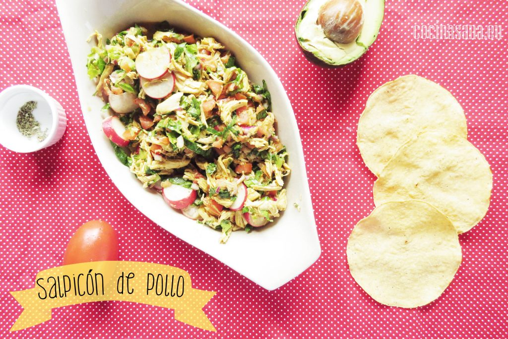

Ingredientes
- Pechuga de Pollo - 2 pzas.
- Lechuga - 1 tza.
- Rábano - 4 pzas.
- Tomate - 2 pzas.
- Cebolla morada - 1/4 pza.
- Aguacate - 1 pza.
- Orégano - 1/4 cdta.
- Vinagre o jugo de limón - 2 cdas.
- Aceite de oliva - 2 cdas.
- Sal y pimienta - cantidad suficiente
Preparación:
- Cocer la pechuga con un diente de ajo, sal y un poco de pimienta. Hasta que al insertar un cuchillo en la parte más gruesa el
- líquido salga muy claro. Deja enfriar y deshebrar.
- Picar en rodajas el rábano y picar en cubos pequeños el tomate y la cebolla.
- Cortar la Lechuga en tiras finas, para esto solo toma las hojas de lechuga y presiona para compactarlas y cortar en tiras muy delgadas.
- Mezclar en un recipiente profundo todas las verduras que picamos y la pechuga de pollo.
- Aliñar el salpicón con el aceite de oliva, el vinagre o jugo de limón y el orégano.
- Condimentar con sal y pimienta al gusto.
- Al momento de servir coloca rebanadas de aguacate y sirve el salpicón de pollo en tostadas o galletas saladas.
¡Listo para disfrutar!